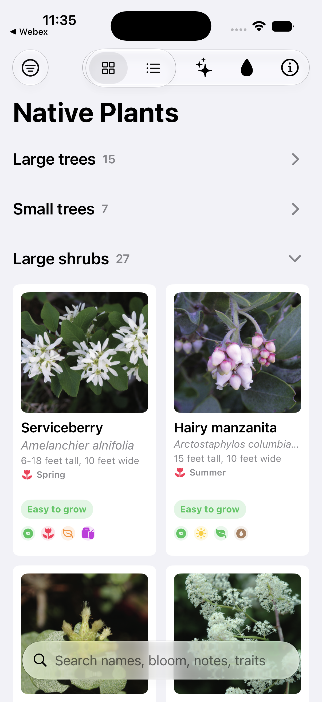
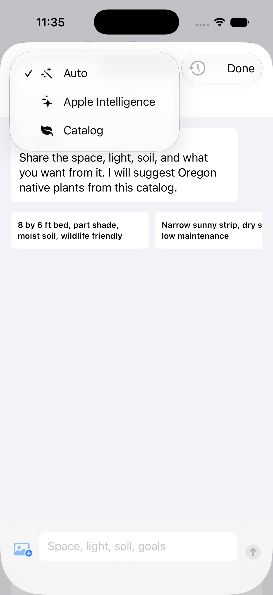
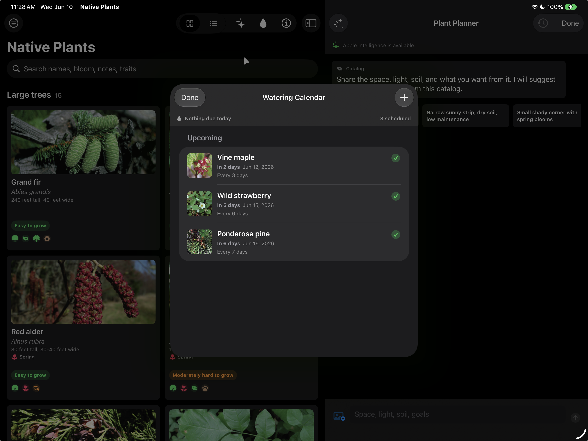
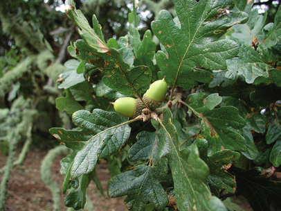

Native Plants / iOS API showcase
Modern iOS APIs with real app code
A concrete tour of Foundation Models, App Intents, Spotlight entities, PhotosUI, and SwiftUI using the Native Plants app.
The framing
New APIs make app data legible to the system
The important shift is not a single framework. It is that the app exposes domain concepts - plants, watering schedules, planner turns, and favorite order - through system-native surfaces.
The examples are drawn from NativePlants/PlantPlanner.swift, WateringAppIntents.swift, WateringSchedule.swift, and ContentView.swift.
The project
A small app with enough real surface area



Foundation Models
Treat Apple Intelligence as runtime capability
The code checks framework availability, OS availability, model availability, and user/device state before trying to ask the model anything.
#if canImport(FoundationModels)
if #available(iOS 26.0, *) {
switch SystemLanguageModel.default.availability {
case .available:
return PlantPlannerRuntimeStatus(
isAvailable: true,
message: "Apple Intelligence is available.",
symbolName: "sparkles"
)
case .unavailable(.modelNotReady):
return PlantPlannerRuntimeStatus(
isAvailable: false,
message: "The Apple Intelligence model is not ready yet, so the catalog planner will answer.",
symbolName: "clock"
)
default:
return PlantPlannerRuntimeStatus(
isAvailable: false,
message: "Apple Intelligence is not available right now.",
symbolName: "leaf.fill"
)
}
}
#endifStructured output
Do not ask for prose when you need app data
The planner ranks candidate plants locally, gives those IDs to the model, and requires the model to return only IDs from that set.
- 1Local matcher narrows the full catalog to 32 candidates.
- 2The schema defines a PlantID enum from those candidates.
- 3The response is decoded and mapped back to catalog plants.
let candidates = PlantPlanningMatcher.rankedPlants(
for: question,
in: plants,
limit: 32
)
let plantIDSchema = DynamicGenerationSchema(
name: "PlantID",
description: "A plant ID from the candidate catalog.",
anyOf: candidates.map(\.id)
)
let recommendationIDsSchema = DynamicGenerationSchema(
arrayOf: DynamicGenerationSchema(referenceTo: "PlantID"),
minimumElements: 3,
maximumElements: 5
)
let response = try await session.respond(
to: prompt(for: question, history: history, candidates: candidates, hasPhoto: hasPhoto),
schema: try planSchema(for: candidates),
options: GenerationOptions(temperature: 0.3, maximumResponseTokens: 650)
)PhotosUI
Photo attachment as explicit planning context
The planner lets the user attach a yard photo or sketch, but the prompt is careful about what the model may infer.
PhotosPicker(selection: $selectedPhotoItem, matching: .images) {
Image(systemName: selectedPhoto == nil
? "photo.badge.plus"
: "photo.fill")
}
guard let data = try await item.loadTransferable(type: Data.self) else {
selectedPhoto = nil
photoLoadError = "That photo could not be loaded."
return
}App Intents
Start by modeling the nouns
Before Siri can schedule watering, the system needs a durable, searchable representation of a plant.
struct PlantEntity: AppEntity {
static let typeDisplayRepresentation =
TypeDisplayRepresentation(name: "Plant")
static let defaultQuery = PlantEntityQuery()
let id: String
let name: String
let scientificName: String
let traits: [String]
var displayRepresentation: DisplayRepresentation {
DisplayRepresentation(
title: "\(name)",
subtitle: "\(scientificName)",
image: .init(systemName: "leaf.fill")
)
}
}
struct PlantEntityQuery: EnumerableEntityQuery, EntityStringQuery {
func entities(matching string: String) async throws -> [PlantEntity] {
let query = string.foldedForSearch
return PlantCatalog.load()
.filter { $0.searchableText.contains(query) }
.map(PlantEntity.init)
}
}Siri and Shortcuts
Expose real workflows, not screen taps
Scheduling and marking watering are domain actions. The app exposes them as intents with typed parameters, returned values, and spoken dialogs.

struct ScheduleWateringIntent: AppIntent {
static let title: LocalizedStringResource =
"Schedule Plant Watering"
@Parameter(title: "Plant")
var plant: PlantEntity
@Parameter(title: "First Watering", kind: .date)
var startDate: Date
@MainActor
func perform() async throws -> some ReturnsValue<WateringScheduleEntity> & ProvidesDialog {
let schedule = WateringScheduleStore.shared.upsertSchedule(
for: catalogPlant,
startDate: startDate,
intervalDays: intervalDays,
notes: notes ?? ""
)
return .result(
value: WateringScheduleEntity(schedule: schedule),
dialog: "I scheduled \(catalogPlant.name)."
)
}
}AppShortcutsProvider
Make the actions discoverable
The shortcuts provider gives the system suggested phrases, tile color, titles, and icons so the actions can appear in Siri and Shortcuts.
struct NativePlantsAppShortcuts: AppShortcutsProvider {
static var shortcutTileColor: ShortcutTileColor = .lime
static var appShortcuts: [AppShortcut] {
AppShortcut(
intent: ScheduleWateringIntent(),
phrases: [
"Schedule plant watering in \(.applicationName)",
"Add watering to \(.applicationName)"
],
shortTitle: "Schedule Watering",
systemImageName: "drop.fill"
)
AppShortcut(
intent: MarkPlantWateredIntent(),
phrases: [
"Mark plant watered in \(.applicationName)",
"I watered a plant in \(.applicationName)"
],
shortTitle: "Mark Watered",
systemImageName: "checkmark.circle.fill"
)
}
}Core Spotlight
Index app entities, not loose strings
The app indexes both plants and watering schedules. Search can find a plant by common name, scientific name, trait, or watering-related context.
- AIndexedEntity controls the searchable metadata.
- BCSSearchableIndex.indexAppEntities publishes the actual app entities.
- CDeleting a schedule removes the matching indexed entity.
extension PlantEntity: IndexedEntity {
var attributeSet: CSSearchableItemAttributeSet {
let attributes = defaultAttributeSet
attributes.title = name
attributes.contentDescription =
"\(scientificName). \(section). \(difficulty). \(notes)"
attributes.keywords = traits + [
scientificName,
section,
difficulty,
"native plant",
"watering"
]
return attributes
}
}
let plantEntities = plants.map(PlantEntity.init)
let scheduleEntities = schedules.map(WateringScheduleEntity.init)
try? await searchableIndex.indexAppEntities(plantEntities)
try? await searchableIndex.indexAppEntities(scheduleEntities)NSUserActivity + app entities
Tell the system which entity is on screen
When a plant detail page is visible, the activity carries an app entity identifier for that exact plant.

.userActivity("dev.ryleyherrington.NativePlants.viewPlant") { activity in
if #available(iOS 18.2, *) {
activity.appEntityIdentifier = EntityIdentifier(
for: PlantEntity.self,
identifier: plant.id
)
}
}SwiftUI
One catalog UI, two device shapes
The app keeps the catalog and planner side by side on iPad, then falls back to sheet-driven planner presentation on compact iPhone layouts.
var body: some View {
NavigationSplitView(
columnVisibility: $columnVisibility,
preferredCompactColumn: $preferredCompactColumn
) {
catalogColumn
.navigationSplitViewColumnWidth(min: 320, ideal: 540, max: 760)
} detail: {
plannerDetail
}
.navigationSplitViewStyle(.balanced)
.sheet(isPresented: $showsPlannerSheet) {
PlantPlannerView(plants: plants) {
showsPlannerSheet = false
}
}
}SwiftUI reorderable content
Favorite order is the data model
The reorder sheet binds directly to persisted favorite IDs. Reordering is not a temporary UI trick; it updates the source of truth.

private var favoriteRows: some View {
ForEach($store.favoriteIDs, id: \.self) { $plantID in
if let plant = plantsByID[plantID] {
FavoriteReorderRow(plant: plant)
}
}
.reorderable()
}
@Published var favoriteIDs: [String] {
didSet {
save()
}
}Live demo path
A practical sequence for the room
This order keeps the talk tied to visible product behavior before dropping into code.
- Open the catalog and show search or filters so the team sees the domain data.
- Open Plant Planner and ask for a shady, moist, wildlife-friendly bed.
- Point out that generated recommendations map back to real catalog plants.
- Open Watering Calendar and show schedule creation from the app UI.
- Show the App Intent that exposes the same watering action to Siri and Shortcuts.
- Close with Spotlight indexing and app entity linking as the connective layer.
Design principles
What to copy into other apps
Constrain AI to app data
Rank candidates locally, use structured schemas, and validate IDs before showing output.
Model nouns first
Good App Intents start with durable app entities and reliable queries.
Index entities
Spotlight is strongest when it receives app entities with useful metadata.
Keep fallbacks real
Availability checks should land on a meaningful product behavior, not a dead end.
Closing thought
The system can only help with the app concepts it can see
Native Plants is a small app, but the API pattern scales: expose domain entities, expose domain actions, constrain generated output, and keep the UI adaptive.
Catalog-backed planning with bounded structured output.
Watering workflows and plant records available outside the app chrome.
A compact app that still behaves like a native iPhone and iPad product.